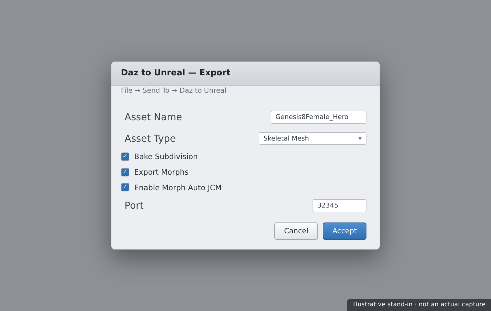
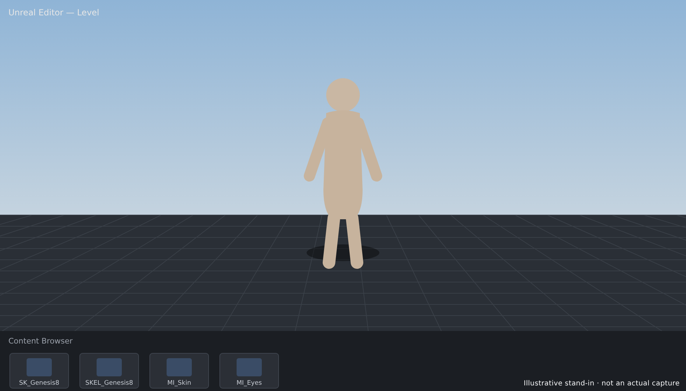

🎮 Lesson 5.2: The Daz to Unreal Bridge
Blender was one destination; Unreal Engine is the other. The Daz to Unreal Bridge sends your Genesis figure into a real-time game engine — mesh, skeleton, materials, and even animation — where it can walk through a level, be lit in real time, and star in cinematics or games. In this lesson you'll install the Unreal plugin and its bridge, export a figure into a project, understand the skeleton and why retargeting matters, rebuild materials as Unreal Material Instances, transfer animation, and see clearly how Daz figures relate to (and differ from) Epic's MetaHuman. This is the pipeline's final bridge — and the gateway to real-time.
🎯 Learning Objectives
By the end of this lesson, you will be able to:
- Install the Daz to Unreal plugin and its Unreal-side bridge
- Export a Genesis figure into an Unreal project
- Explain the skeleton and why retargeting matters
- Work with Daz materials as Unreal Material Instances
- Transfer animation from Daz to Unreal
- Describe how Daz figures relate to MetaHuman
- Follow a dependable Unreal bridge workflow
Estimated Time: 65 minutes
Project: Your Daz character imported into an Unreal level as a Skeletal Mesh with working materials, placed and lit in real time, ready for animation or a cinematic.
In This Lesson
Why Bridge to Unreal
Where Daz and Blender render one frame at a time, Unreal Engine renders in real time — dozens of frames a second, interactively. Bringing your Daz figure into Unreal means it can move through a game, star in a real-time cinematic, or be lit and re-posed instantly. The Daz to Unreal Bridge automates that handoff just like the Blender one did.
💡 The one-sentence version: The Daz to Unreal Bridge sends your figure into Unreal as a real-time Skeletal Mesh — with skeleton, materials, and optional animation — so a Daz character can live in a game or cinematic.
📖 Definition
Skeletal Mesh (Unreal): Unreal's format for an animatable character — a mesh bound to a skeleton (bones) so it can be posed and animated. The bridge converts your Daz figure into a Skeletal Mesh asset in your Unreal project's Content Browser.
Real-time changes everything about how you think. There's no waiting for a render; you move a light and see the result instantly. That speed is why game developers and virtual-production artists reach for Unreal — and why a fast character source like Daz pairs so well with it.
💡 Real-time means budgets matter
A Daz figure is built for offline Iray renders — dense mesh, huge 4K textures — which can be heavy for real-time. In Unreal you'll often optimize: reduce texture sizes, use LODs, and simplify shaders. The bridge gets the character in; making it performant is a real-time skill layered on top.
⚠️ Important Note: As with the Blender bridge, the Daz plugin and the Unreal plugin must match your Unreal Engine version. Unreal updates often and plugins are version-locked, so confirm the bridge supports your exact UE version before installing — a mismatch simply won't load.
Installing the Plugin & Bridge
Like the Blender bridge, this is a two-part install — but the Unreal half is a project/engine plugin rather than a simple add-on, so there's a little more to it.
📖 Definition
The two parts: the Daz-side plugin (installed via DIM) adds a Send to Unreal command; the Unreal-side plugin (the DazToUnreal plugin) is enabled in your Unreal project and listens for incoming figures, importing them into the Content Browser.
Install steps
| Step | Where | What you do |
|---|---|---|
| 1. Daz plugin | Daz Install Manager | Install "Daz to Unreal Bridge"; adds a menu command |
| 2. UE plugin | Unreal project's Plugins folder | Install DazToUnreal and enable it in the project |
| 3. Restart & enable | Unreal Editor | Restart UE; confirm the plugin is enabled |
| 4. Match ports | Both apps | Ensure the bridge port setting matches on each side |
✅ Pro Tip — the bridge talks over a local port
The Daz and Unreal halves communicate over a network port on your machine. If a transfer never arrives, the port number in the Daz dialog and the Unreal plugin settings probably don't match — set them the same, and make sure no firewall prompt was dismissed. This is the Unreal bridge's most common gotcha.
⚠️ Important Note: Unreal plugins can be installed per-project or engine-wide, and some versions need the plugin built for your exact engine build. If the plugin won't enable, verify it's the right one for your UE version and that it lives in the correct Plugins folder — a wrong-version plugin is silently ignored.
Exporting to Unreal
With both halves installed and Unreal open, sending a figure mirrors the Blender flow. In Daz, select the figure and choose File → Send To → Daz to Unreal. A dialog lets you set the asset name, asset type, and options — then it transfers straight into your open Unreal project.

The key choice is Asset Type:
| Asset Type | Use it for… |
|---|---|
| Skeletal Mesh | A posable, animatable character — the usual choice for a figure |
| Static Mesh | Non-animated props and environment pieces |
| Animation | Sending a pose or animation onto an already-imported skeleton |
💡 Import once, animate many
You don't re-import the whole character for every animation. Send the figure once as a Skeletal Mesh, then send additional Animation assets that target that same skeleton. This keeps your project tidy — one character, a library of clips — exactly how Unreal expects animation to be organized.
⚠️ Important Note: Unreal must be open with your project loaded when you send, or the figure has nowhere to land. Unlike a file you can import later, the bridge pushes into a live editor session — start Unreal first, then send from Daz.
Skeleton & Retargeting
Daz figures use the Genesis skeleton, which has its own bone names and hierarchy. Unreal animations — and the huge library of Marketplace and Mannequin animations — are often built for a different skeleton. Retargeting is how you make one skeleton's animation play on another.
📖 Definition
Retargeting: mapping animation from one skeleton onto another with a different bone structure or proportions. In Unreal, an IK Rig and IK Retargeter define how, say, a Mannequin walk cycle drives the Genesis skeleton — letting your Daz figure use animations it wasn't authored for.
Why it matters: the bridge brings the Genesis skeleton across faithfully, so Daz animations play perfectly. But to use Unreal's ecosystem of animations, you retarget them onto the Genesis skeleton.
💡 Genesis is not the UE Mannequin
A frequent surprise: dropping a standard Mannequin animation onto a Daz figure looks broken, because the skeletons differ. That's not a bridge failure — it's the retargeting step you haven't done yet. Set up an IK Rig for the Genesis skeleton, then retarget Mannequin/Marketplace clips onto it.
⚠️ Important Note: Retargeting quality depends on a good bone mapping and matching a reference pose (e.g. A-pose vs T-pose) between source and target. If a retargeted animation looks twisted, revisit the pose alignment and the bone chains in the IK Rig before blaming the animation itself.
Materials in Unreal
The bridge rebuilds your Daz surfaces as Unreal Material Instances, wiring your diffuse, normal, roughness, and other maps into a base material the plugin provides. As with Blender, they arrive close — but skin usually wants a pass to look right in real time.
📖 Definition
Material Instance (Unreal): a lightweight variation of a base Material whose exposed parameters (colors, texture maps, scalar values) you tweak without recompiling shaders. The bridge creates one instance per Daz surface, so you adjust skin, eyes, and hair by editing parameters.
Common material tasks
- Skin — enable/tune subsurface so real-time skin isn't flat and plasticky.
- Hair — transparency-based hair cards may need the right blend/shading mode to sort correctly.
- Eyes — refraction and clarity often need adjustment for a lively look.
- Texture sizes — consider downscaling 4K maps for real-time performance.
✅ Pro Tip — lean on the plugin's master materials
DazToUnreal ships base "master" materials tuned for Daz surfaces. Rather than rebuilding shaders from scratch, adjust the exposed parameters on the generated Material Instances. It's faster, keeps everything consistent, and preserves the plugin's careful setup for skin and translucency.
⚠️ Important Note: Real-time skin and hair are genuinely hard — Unreal's offline-quality look takes tuning, and transparent hair especially can render with sorting artifacts. Budget time for materials; a figure that looks flawless in Iray needs deliberate work to look equally good running at 60 fps.
Animation & MetaHuman
Two questions come up constantly: how do I get my Daz animation into Unreal, and how does all this relate to Epic's MetaHuman? Let's answer both.
Transferring animation
Animate in Daz (Lesson 4.2), then send it with Asset Type Animation targeting your already-imported Genesis skeleton. The clip lands as an Unreal Animation Sequence you can play, blend, and sequence — no retargeting needed, because it's already on the Genesis skeleton.
📖 Definition
MetaHuman: Epic's system for creating extremely high-fidelity, real-time digital humans, with its own rig (including advanced facial controls) and pipeline. MetaHumans are purpose-built for Unreal and are a different character system from Daz Genesis figures.
Daz vs MetaHuman
| Aspect | Daz Genesis (bridged) | MetaHuman |
|---|---|---|
| Origin | Built in Daz, bridged into UE | Built in MetaHuman Creator for UE |
| Content ecosystem | Huge Daz store of characters & clothing | Epic's MetaHuman presets and assets |
| Facial rig | Daz expressions/morphs | Advanced built-in facial rig |
| Best when | You want Daz content and characters in UE | You want Epic's top-tier real-time humans |
💡 They're complementary, not rivals
Daz brings an enormous library of ready-made characters and clothing; MetaHuman brings Epic's cutting-edge real-time human tech. Many productions use both — a crowd of bridged Daz figures, a hero MetaHuman — and some workflows even combine Daz assets with MetaHuman rigs. Pick the tool that fits the shot.
⚠️ Important Note: Don't expect a bridged Daz figure to inherit MetaHuman's facial rig or animations automatically — they're separate systems. Bridging gives you a Daz character in Unreal; using MetaHuman's rig on it is an advanced, separate undertaking, not a checkbox in the bridge.
An Unreal Workflow
Bring the steps together into a reliable order and Unreal transfers become routine.
| Step | Do this | Why |
|---|---|---|
| 1. Open UE | Launch Unreal with your project loaded | The bridge pushes into a live session |
| 2. Prepare | Finalize the figure in Daz; trim morphs | You transfer what's there; keep it lean |
| 3. Send figure | Send as a Skeletal Mesh | Creates the character asset in UE |
| 4. Materials | Tune the generated Material Instances | Real-time skin/hair needs adjustment |
| 5. Animate | Send animations or retarget UE clips | Bring the character to life in the level |
💡 Keep Daz as the source; optimize in Unreal
The bridge is one-way, so the Daz scene stays your master — re-bridge when the character changes. Meanwhile, all the real-time work — LODs, texture sizing, material tuning, retargeting — lives in Unreal and doesn't go back. Two clear homes: authoring in Daz, optimization and staging in Unreal.

⚠️ Important Note: Unreal projects are large and version-specific. Once a character is imported and optimized in a given project, upgrading the engine version later can require re-validating plugins and assets. Decide your target UE version early and keep the bridge plugin matched to it throughout a project.
Hands-on: Into a Level
Let's get your character standing in an Unreal level — verify the install, send the figure, and place it in the scene.
🏋️ Exercise 1: Verify & Connect
Objective: Confirm both halves and the port match.
Steps:
- In Daz, confirm the File → Send To → Daz to Unreal command exists.
- In Unreal, open Edit → Plugins and confirm DazToUnreal is enabled (restart if you just enabled it).
- Check the port number matches in the Daz dialog and the UE plugin settings.
🏋️ Exercise 2: Send the Figure
Objective: Import the character as a Skeletal Mesh.
Steps:
- With your Unreal project open, select the figure in Daz.
- Run Send To → Daz to Unreal with Asset Type Skeletal Mesh, name it, and send.
- In Unreal's Content Browser, confirm the Skeletal Mesh, skeleton, and materials appeared.
💡 Hint — I sent the figure but nothing arrived in Unreal
Work through the connection: is Unreal open with the project loaded? Is the DazToUnreal plugin enabled (and did you restart UE after enabling)? Do the port numbers match on both sides, and was any firewall prompt allowed? Is the plugin the right build for your exact UE version? The Unreal bridge's failures are almost always the live-session, port, or version link — not the figure itself.
🏋️ Exercise 3: Place & Light
Objective: Stage the character in a real-time scene.
Steps:
- Drag the Skeletal Mesh from the Content Browser into your level.
- Tune the skin Material Instance — enable/adjust subsurface so it isn't flat.
- Add a light, move it, and watch the character update in real time. Save the level.
🎯 Quick Quiz
Question 1: When sending a figure with the Daz to Unreal Bridge, what must be true?
Question 2: A standard Unreal Mannequin walk animation looks broken on your Daz figure. Why?
Question 3: How do Daz Genesis figures relate to MetaHuman?
Best Practices
✅ Do's
- Match the plugin to your exact UE version before installing.
- Open Unreal with the project loaded before sending from Daz.
- Confirm the bridge port matches on both sides.
- Import the figure once, then send animations onto its skeleton.
- Tune Material Instances rather than rebuilding shaders.
- Optimize for real-time — texture sizes, LODs — after import.
❌ Don'ts
- Don't send with Unreal closed — the figure has nowhere to land.
- Don't expect Mannequin animations to just work — retarget them first.
- Don't assume real-time skin looks like Iray — it needs deliberate tuning.
- Don't confuse Daz figures with MetaHumans — separate systems.
- Don't ignore version-locking — plugins are tied to engine builds.
💡 Pro Tips
- Keep the port setting identical in Daz and the UE plugin to avoid silent failures.
- Send one Skeletal Mesh and build a library of Animation assets on it.
- Set up an IK Rig for Genesis so you can retarget the whole UE animation ecosystem.
- Downscale 4K skin maps for characters that run in real time.
- Keep the Daz scene as the master and re-bridge when the character changes.
Summary
🎉 Key Takeaways
- The Daz to Unreal Bridge sends a figure into Unreal as a real-time Skeletal Mesh, with skeleton, materials, and optional animation.
- Install both halves, match the plugin to your UE version, and make the bridge port match on each side.
- The Genesis skeleton differs from the UE Mannequin, so using Unreal's animation library requires retargeting via an IK Rig.
- Materials arrive as Material Instances you tune — real-time skin and hair need deliberate work to look their best.
- Daz figures and MetaHuman are separate, complementary systems — Daz for content breadth, MetaHuman for Epic's top-tier real-time humans.
📚 Additional Resources
- Daz to Unreal Bridge — official product page
- Daz to Unreal Bridge — official documentation
- MetaHuman — Epic Games
🚀 What's Next?
Both geometry bridges are in your toolkit — your Daz figure can go to Blender and Unreal. But a finished image needs one more stop. In Lesson 5.3 — The Daz to Photoshop Bridge, you'll carry your Iray render into Photoshop for its final polish: render passes and canvases, a non-destructive layer stack, colour grading, light retouching, depth-based atmosphere, and compositing — before the capstone ties the whole pipeline together.
💡 Your figure went real-time!
Plugin, bridge, Skeletal Mesh, retargeting, materials, animation, and the MetaHuman picture — your Daz character now lives in Unreal Engine, lit and posable in real time. You've connected Daz to both major 3D destinations. Next you'll finish a render in Photoshop, then a capstone ties the whole pipeline together.